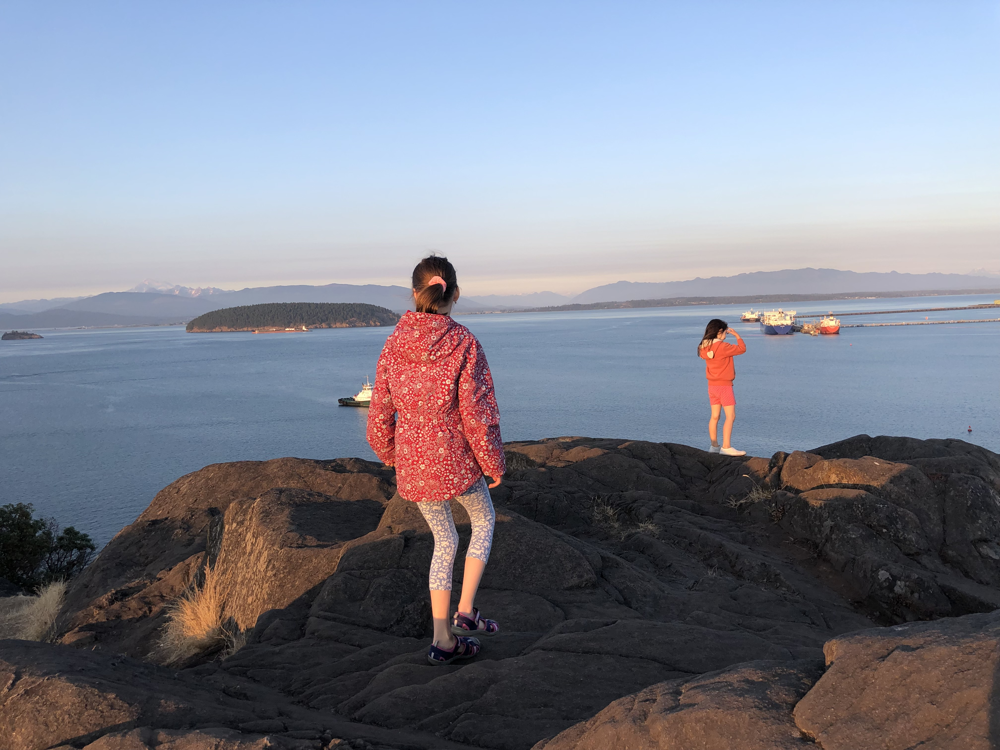
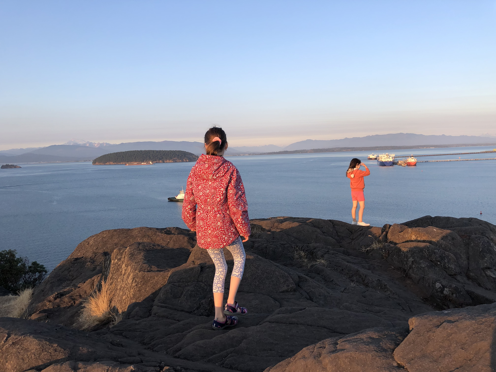
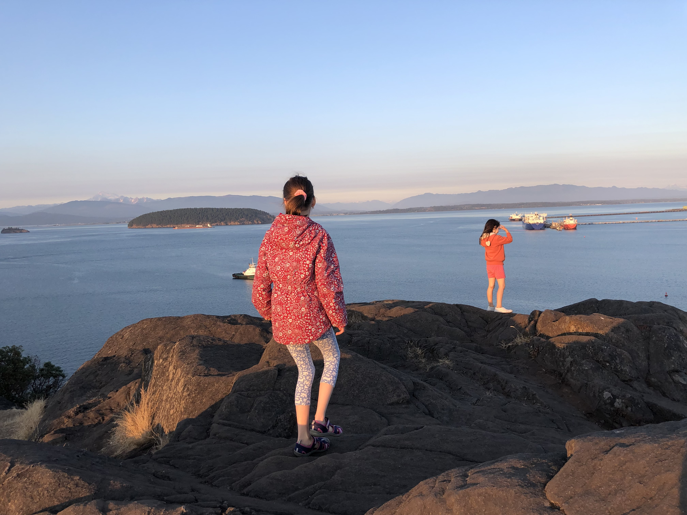

The Pacific Northwest (PNW), sometimes referred to as Cascadia, is a geographic region in western North America bounded by its coastal waters of the Pacific Ocean to the west and, loosely, by the Rocky Mountains to the east. (Wikipedia)

Located on the north shore of Fidalgo Island in Washington State's Puget Sound, Anacortes was founded in 1879 by railroad surveyor Amos Bowman and named in honor of his wife, Anne Curtis. Bowman promoted Anacortes as the "New York of the West," ultimately failing to establish the urban center he envisioned. (History of Anacortes)
Ship Harbor Inn is a quiet and relaxing alternative, located minutes from historic Downtown Anacortes, walking distance to the ferry terminal serving the San Juan Islands and Victoria BC via Port Sidney. Situated on six acres amidst mature cedars and firs, our guests often see deer browsing nearby, eagles or hawks overhead, and many other species supported by the Ship Harbor Wetland immediately below us. (Ship Harbor Inn)
Cap Sante is a forested rocky headland jutting out into Fidalgo Bay from the northeast corner of Anacortes. The name is French for "Cape Health". (Cap Sante Park)